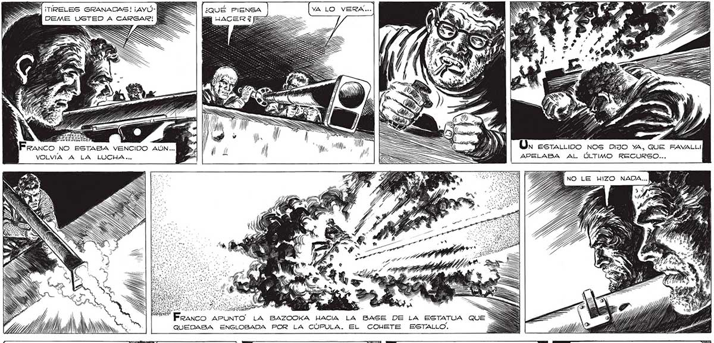
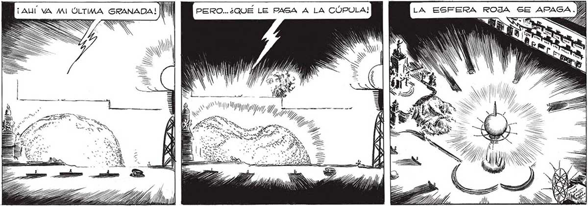

Sr A ave 2] == WR Tr HTA 285 ¡TIRELES GRANADAS! ¡AYU - MES ¿QUÉ PIENSA VA LO VERA... yE y > : pS z z DEME USTED A CARGAR! MES E á ; === o, “A A y (MU 77 Or estrariioo nos DIJO YA, QUE FAVALLI APELABA AL ÚLTIMO RECURSO... UNO LE HIZO NADA... cy | Franco APUNTO. LA BAZOOKA HACIA LA BASE DE LA ESTATUA QUE SS GI ,l NN 97 QUEDABA ENGLOBADA POR LA CÚPULA. EL COWETE ESTALLO. : CREI QUE RESULTARÍA ...QUE LA ESTATUA SERIA UN PUN- [z TO DEBIL EN EL BLINDAJE ... |S £ LA ESFERA ROJA SE APAGA. QT N PROBARE OTRA VEZ... fi Ñ la PP. ATT Ud 0, Man DN SS OS IN | << SS US dí p

